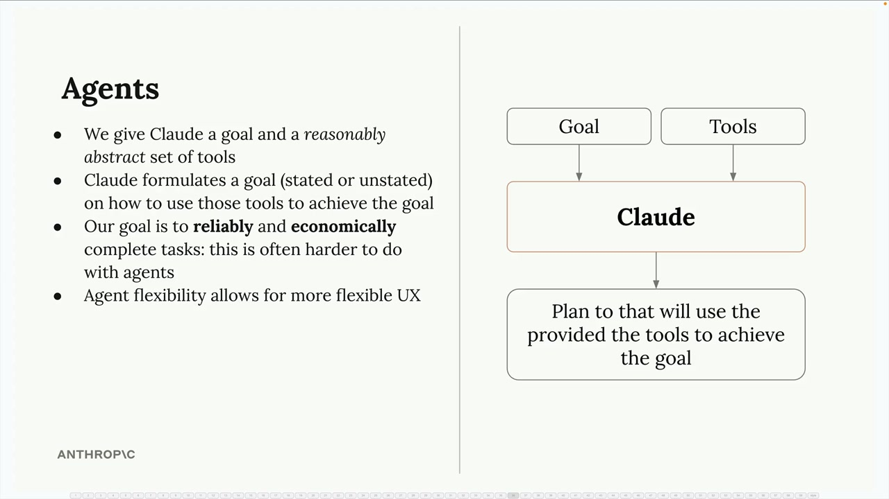
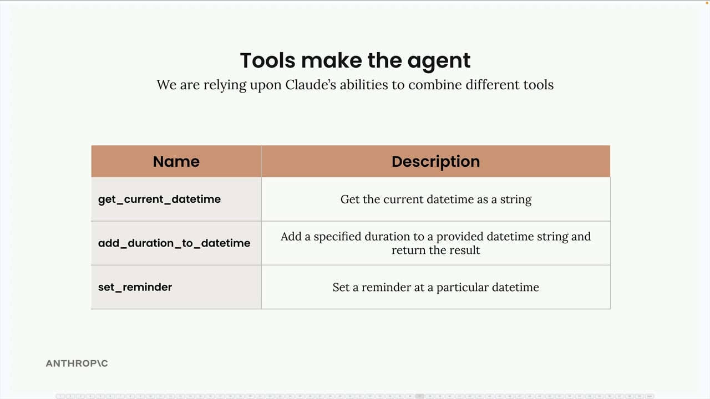
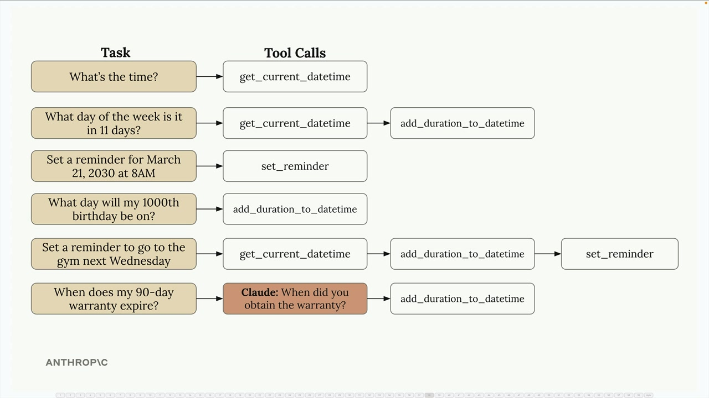
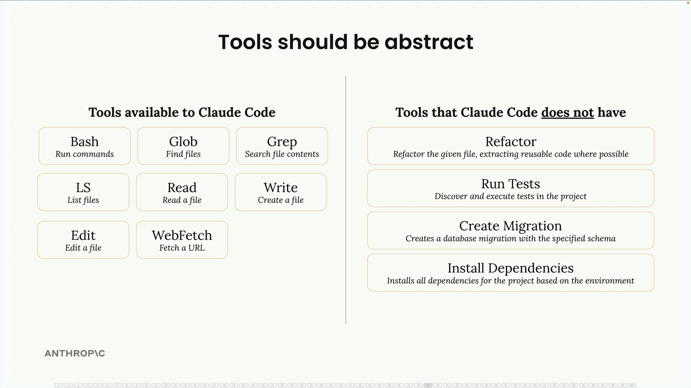
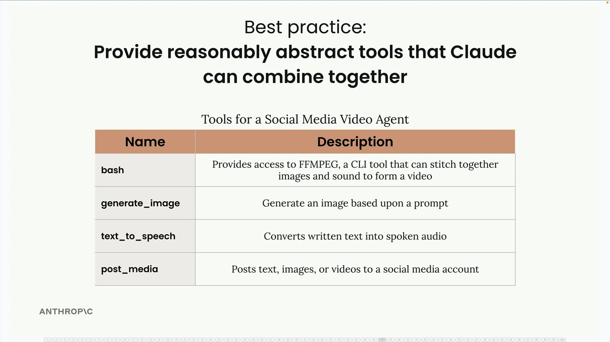
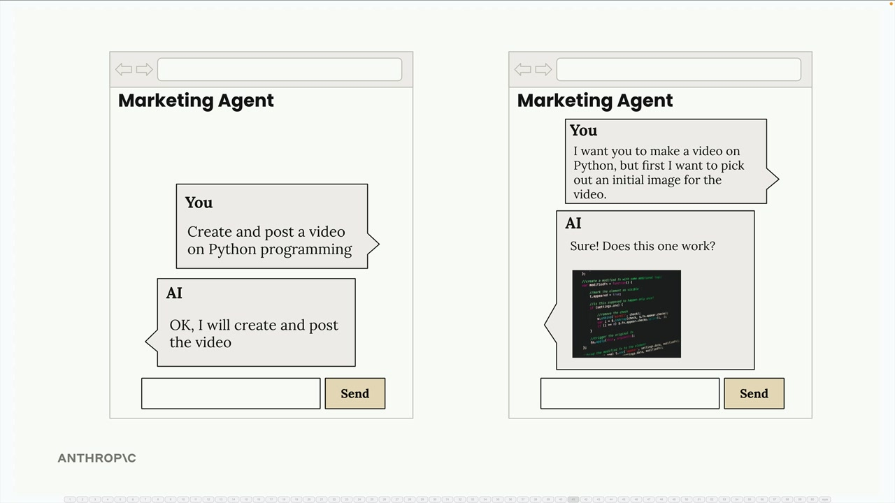

Агенты и инструменты
Чему научитесь
Видео 5:02 и текст урока
К концу урока вы сможете:
- объяснить, как агент сочетает простые инструменты для сложных задач;
- проектировать абстрактные, комбинируемые инструменты;
- назвать компромиссы агентов по надёжности и стоимости.
Видео и текст урока.
Смотреть урок на Skilljar Agents and tools · 5:02Агенты — это шаг в сторону от структурированных workflow, с которыми мы работали. Workflow идеальны, когда вы знаете точные шаги для выполнения задачи, а агенты сильны там, где вы не знаете, какими должны быть эти шаги. Вместо жёсткой последовательности вы даёте Claude цель и набор инструментов и позволяете ему самому понять, как сочетать инструменты для достижения цели.

Эта гибкость делает агентов привлекательными для приложений, которым нужно справляться с разнообразными, непредсказуемыми задачами. Можно один раз создать агента, убедиться, что он работает достаточно хорошо, и затем применять его для широкого круга задач. Однако за гибкость приходится платить надёжностью и стоимостью — об этом поговорим позже.
Агента делают инструменты
Настоящая сила агентов — в умении сочетать простые инструменты неожиданными способами. Возьмём базовый набор инструментов для работы с датой и временем:

get_current_datetime— получает текущие дату и время;add_duration_to_datetime— прибавляет промежуток времени к дате;set_reminder— создаёт напоминание на определённое время.
По отдельности эти инструменты кажутся простыми, но Claude может объединять их в цепочки и справляться с неожиданно сложными запросами:

На вопрос «What's the time?» Claude просто вызывает get_current_datetime. А для «What day of the week is it in 11 days?» он сначала вызывает get_current_datetime, затем add_duration_to_datetime. Чтобы поставить напоминание сходить в спортзал в следующую среду, он может использовать все три инструмента по очереди.
Claude даже понимает, когда ему не хватает информации. Если спросить «When does my 90-day warranty expire?», он знает, что сначала нужно спросить, когда вы купили товар, и только потом вычислять дату окончания.
Инструменты должны быть абстрактными
Ключевая мысль для создания эффективных агентов — давать достаточно абстрактные инструменты, а не узкоспециализированные. Claude Code отлично демонстрирует этот принцип.

У Claude Code есть универсальные, гибкие инструменты:
bash— выполнить любую команду;read— прочитать любой файл;write— создать любой файл;edit— изменить файл;glob— найти файлы;grep— искать по содержимому файлов.
Примечательно, что у него нет специализированных инструментов вроде «refactor code» или «install dependencies». Вместо этого Claude сам понимает, как выполнить такие сложные задачи с помощью базовых инструментов. Эта абстрактность позволяет ему справляться с бесчисленными сценариями программирования, которые разработчики никогда явно не планировали.
Лучшая практика: комбинируемые инструменты
Проектируя агентов, давайте инструменты, которые Claude может творчески сочетать. Например, агент для видео в соцсетях может включать:

bash, generate_image, text_to_speech, post_media.bash— доступ к FFmpeg для обработки видео;generate_image— создание изображений по промпту;text_to_speech— преобразование текста в речь;post_media— публикация контента в соцсетях.
Такой набор инструментов позволяет и простые сценарии (создать и опубликовать видео), и более интерактивные: агент может сначала сгенерировать пример изображения, получить одобрение пользователя и только потом создавать видео.

Агент может менять подход в зависимости от отзывов и предпочтений пользователя — с жёстким workflow этого было бы трудно добиться. Именно эта гибкость делает агентов мощными для динамичных приложений, подстраивающихся под пользователя.
Дальше
Следующий урок — проверка окружения (environment inspection): как агент узнаёт результат своих действий.
Оригинал урока: Agents and tools.